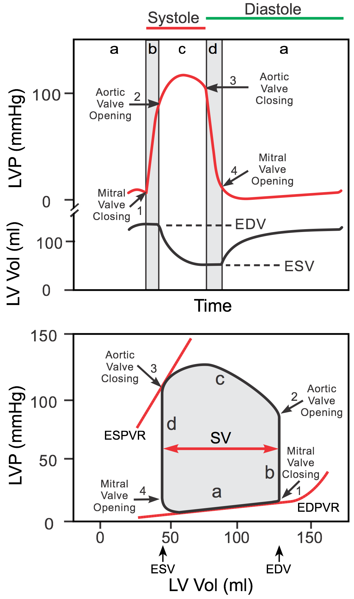
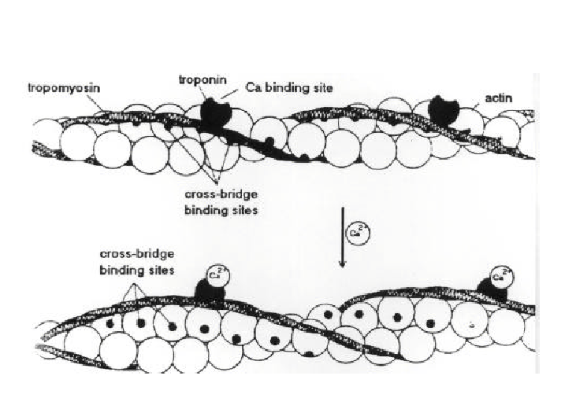
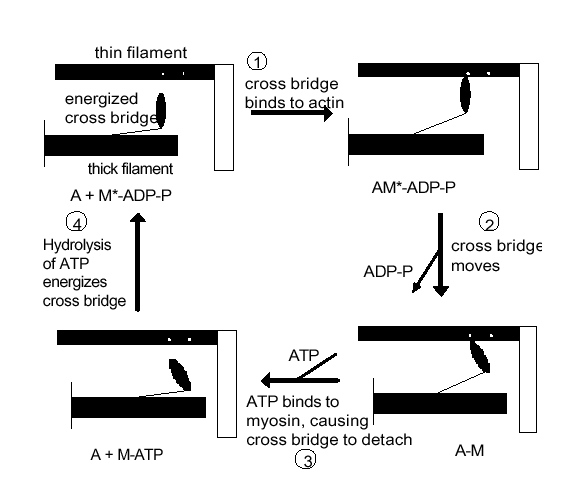
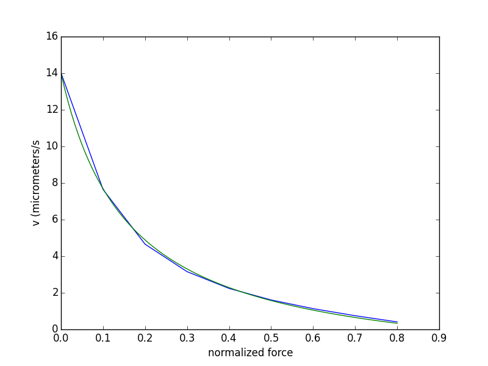
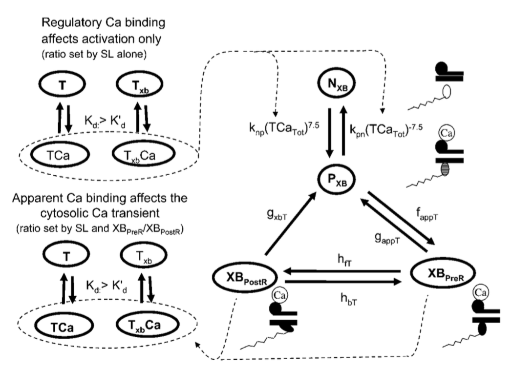
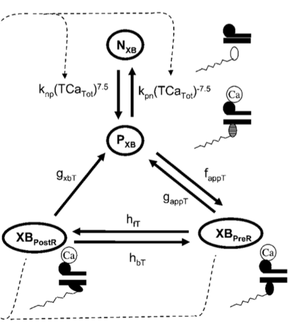

Fundamental cardiac mechanics \\ Part I: Ode models of circulation and cell contraction
Joakim Sundnes
Jun 17, 2016
Outline
- The heart as a pump
- The pressure volume loop
- Phases of the cardiac cycle
- Elastance models of the heart and circulation
- Introduction to sliding filament theory
- Micro-structure of force development
- Cross-bridge cycling
- Regulation of force
- Models of cell contraction
Overview of cardiac function (1)

The four phases of the heart cycle
- Passive filling; the muscle is relaxed and is filled with blood from the venous system (and the atria). Increase of pressure (small) and volume (large)
- Isovolumic contraction; the heart muscle contracts while all valves are closed. The cavity pressure increases while the volume stays constant
- Ejection; the valves open to allow blood to be ejected into the arteries. Pressure increases at first, then drops. Volume decrases
- Isovolumic relaxation; the muscle is relaxing while all valves are closed. The volume remains constant while the pressure drops
The pressure-volume loop

Why model all this?
- Understand fundamental mechanisms
- Investigate pathologies and interventions:
- Linking cell level processes to overall heart function (advanced)
How can it be modeled?
- Top-down (Today (June 17), morning lecture):
- Derive relations for macroscopic function of the heart and other parts of the circulatory system
- Bottom-up/multiscale (Late morning/afternoon):
- Model the biophysics of cell contraction
- Integrate into tissue/organ models
- Couple to models of circulation
Modeling the heart and circulation
- Overview of the circulatory system
- Important quantities
- Resistance and compliance vessels
- Models for the circulatory system
- Examples and extensions
The circulatory system

Important quantities (1)
- Heart rate, measured in beats per minute.
- Cardiac output: The rate of blood flow through the circulatory system, measured in liters/minute.
- Stroke volume: the difference between the end-diastolic volume and the end-systolic volume, i.e. the volume of blood ejected from the heart during a heart beat, measured in liters.
Important quantities (2)
The cardiac ouput \( Q \) is given by
$$
\begin{equation*}
Q = FV_{stroke}
\end{equation*}
$$
Typical values:
- \( F= 80 \) beats/minute.
- \( V_{stroke} = 70\textrm{cm}^3/\textrm{beat} \) = 0.070 liters/beat.
- \( Q = 5.6 \) liters/minute.
Resistance and compliance vessels

- \( V = \) vessel volume,
- \( P_{ext} = \) external pressure,
- \( P_1 = \) upstream pressure,
- \( P_2 = \) downstream pressure,
- \( Q_1 = \) inflow,
- \( Q_2 = \) outflow.
Resistance vessels
Assume that the vessel is rigid, so that \( V \) is constant. Then we have
$$
\begin{equation*}
Q_1 = Q_2 = Q_* .
\end{equation*}
$$
The flow through the vessel will depend on the pressure drop through the
vessel. The simplest assumption is that \( Q_* \) is a linear function of
the pressure difference \( P_1 -P_2 \):
$$
\begin{equation*}
Q_* = \frac{P_1 -P_2}{R},
\end{equation*}
$$
where \( R \) is the resistance of the vessel.
Compliance vessels
Assume that the resistance over the vessel is negligible. This gives
$$
\begin{equation*}
P_1 = P_2 = P_*
\end{equation*}
$$
Assume further that the volume depends on the pressure \( P_* \). We assume the
simple linear relation
$$
\begin{equation*}
V = V_d + CP_* ,
\end{equation*}
$$
where \( C \) is the compliance of the vessel and \( V_d \) is the "dead volume",
the volume at \( P_*=0 \).
Vessels in the circulation
- All blood vessels can be viewed as either resistance vessels or compliance vessels. (This is a reasonable assumption, although all vessels have both compliance and resistance.)
- Large arteries and veins; negligible resistance, significant compliance.
- Arterioles and capillaries; negligible compliance, significant resistance.
The heart as a compliance vessel (1)
The heart may be viewed as a pair of compliance vessels, where
the compliance changes with time,
$$
\begin{equation*}
V(t) = V_d+C(t)P .
\end{equation*}
$$
The function \( V(t) \) should be specified so that it takes on a large
value \( C_{diastole} \) when the heart is relaxed, and a small value
\( C_{systole} \) when the heart contracts.
The heart as a compliance vessel (2)

From Hoppensteadt & Peskin, Modeling and Simulation in Medicine and the Life Sciences, Springer 2002.
Modeling the heart valves (1)
Characteristic properties of a heart valve:
- Low resistance for flow in the "forward" direction.
- High resistance for flow in the "backward" direction.
Modeling the heart valves (2)
The operation of the valve can be seen as a switching function that depends
on the pressure difference across the valve. The switching function can
be expressed as
$$
\begin{equation*}
S= \left\{
\begin{array}{ll}
1 &\textrm{if} P_1 >P_2 \\
0 &\textrm{if} P_1 < P_2
\end{array}\right.
\end{equation*}
$$
Modeling the heart valves (3)
The flow through the valve can be modeled as flow through a resistance
vessel multiplied by the switching function. We have
$$
\begin{equation*}
Q_* = \frac{(P_1 -P_2)S}{R},
\end{equation*}
$$
where \( R \) will typically be very low for a healthy valve.
Circulation dynamics (1)
For a compliance vessel that is not in steady state, we have
$$
\begin{equation*}
\frac{dV}{dt} = Q_1-Q_2 .
\end{equation*}
$$
If we assume the vessel is connected to resistance vessels, the
flows are given by
$$
\begin{equation*}
Q_j = \frac{P^{in}-P^{out}}{R_j} .
\end{equation*}
$$
Circulation dynamics (2)
The flows \( Q_j \) depend on the pressures, which can be computed from the
linear pressure-volume relation:
$$
P_i = (V_i -V_{d,i})/C_i ,
$$
where \( V_{d,i},C_i \) are the unloaded volume and the compliance for vessel \( i \). These are assumed constant for arteries and veins, and time dependent for the heart.
Another common formulation is to use the elastance instead of the compliance, \( E_i = 1/C_i \), which gives
$$
P_i = E_i(V_i -V_{d,i}),
$$
Circulation dynamics (3)
The circulatory system can now be viewed as a set of compliance vessels
connected by valves and resistance vessels. For each compliance vessel we have
$$
\begin{equation*}
\frac{V_i}{dt} = Q_i^{in}-Q_i^{out} ,
\end{equation*}
$$
with flows given by
$$
\begin{align*}
Q_i^{in} &= \frac{P_{i-1}-P_{i}}{R_{i-1,i}} = \frac{E_{i-1}(V_{i-1} -V_{d,{i-1}})-E_{i}(V_{i} -V_{d,{i}})}{R_{i-1,i}}\\
Q_i^{out} &= \frac{P_{i}-P_{i+1}}{R_{i,i+1}} = \frac{E_{i}(V_{i} -V_{d,{i}})-E_{i+1}(V_{i+1} -V_{d,{i+1}})}{R_{i,i+1}}
\end{align*}
$$
where we have introduced \( R_{i,i+1} \) to denote the resistance between vessel \( i \) and vessel \( i+1 \).
A simple model (1)
Consider first a simple model consisting of three compliance vessels; the
left ventricle, the systemic arteries, and the systemic veins. These are
connected by two valves, and a resistance vessel describing the flow through
the systemic tissues.

A simple model (2)
For the left ventricle we have
$$
\begin{equation*}
\frac{dV_{lv}}{dt} = Q^{in} -Q^{out} ,
\end{equation*}
$$
with \( Q^{in} \) and \( Q^{out} \) given by
$$
\begin{align*}
Q_{in} &= \frac{S_{mi}(P_{sv}-P_{lv})}{R_{mi}} , \\
Q_{out} &= \frac{S_{ao}(P_{lv}-P_{sa})}{R_{ao}} .
\end{align*}
$$
We get
$$
\begin{equation*}
\frac{dV_{lv}}{dt} = \frac{P_{sv}-P_{lv}}{S_{mi}R_{mi}} -
\frac{P_{lv}-P_{sa}}{S_{ao}R_{ao}},
\end{equation*}
$$
A simple model (3)
Similar calculations for the two other compliance vessels gives the system
$$
\begin{align*}
\frac{dV_{lv}}{dt} &= \frac{S_{mi}(P_{sv}-P_{lv})}{R_{mi}} -
\frac{S_{ao}(P_{lv}-P_{sa})}{R_{ao}}, \\
\frac{d V_{sa}}{dt} &= \frac{S_{ao}(P_{lv}-P_{sa})}{R_{ao}} -
\frac{P_{sa}-P_{sv}}{R_{sys}}, \\
\frac{dV_{sv}}{dt} &= \frac{P_{sa}-P_{sv}}{R_{sys}} -
\frac{S_{mi}(P_{sv}-P_{lv})}{R_{mi}}.
\end{align*}
$$
With the pressures given by relations \( P_i = E_i(V_i-V{d,i}) \)
To have a solvable system we need to specify parameters
\( R_{mi}, R_{ao}, R_{sys}, C_{sa}, C_{sv} \) and the function \( C_{lv}(t) \).
A more realistic model (1)
The model can easily be improved to a more realistic model describing six
compliance vessels:
- The left ventricle, \( V_{lv}, E_{lv}(t) \),
- the right ventricle, \( V_{rv}, E_{rv}(t) \),
- the systemic arteries, \( V_{sa}, E_{sa} \),
- the systemic veins, \( V_{sv}, E_{sv} \),
- the pulmonary arteries, and \( V_{pa}, E_{pa} \), and
- the pulmonary veins, \( V_{pv}, E_{pv} \).
A more realistic model (2)
The flows are governed by two resistance vessels and four valves:
- Systemic circulation, \( R_{sys} \),
- pulmonary circulation, \( R_{pu} \),
- aortic valve (left ventricle to systemic arteries), \( R_{ao}, S_{ao} \),
- tricuspid valve (systemic veins to right ventricle), \( R_{tri}, S_{tri} \),
- pulmonary valve (right ventricle to pulmonary arteries), \( R_{puv}, S_{puv} \),
- mitral valve (pulmonary veins to left ventricle) ,$R_{mi}, S_{mi}$.
A more realistic model (3)
This gives the ODE system
$$
\begin{align*}
\frac{V_{lv}}{dt} &= \frac{S_{mi}(P_{sv}-P_{lv})}{R_{mi}} -
\frac{S_{ao}(P_{lv}-P_{sa})}{R_{ao}}, \\
\frac{dV_{sa}}{dt} &= \frac{S_{ao}(P_{lv}-P_{sa})}{R_{ao}} -
\frac{P_{sa}-P_{sv}}{R_{sys}}, \\
\frac{dV_{sv}}{dt} &= \frac{P_{sa}-P_{sv}}{R_{sys}} -
\frac{S_{tri}(P_{sv}-P_{rv})}{R_{tri}}, \\
\frac{dV_{rv}}{dt} &= \frac{S_{tri}(P_{sv}-P_{rv})}{R_{tri}} -
\frac{S_{puv}(P_{rv}-P_{pa})}{R_{puv}}, \\
\frac{dV_{pa}}{dt} &= \frac{S_{puv}(P_{rv}-P_{pa})}{R_{puv}} -
\frac{P_{pa}-P_{pv}}{R_{pu}}, \\
\frac{dV_{pv}}{dt} &= \frac{P_{pa}-P_{pv}}{R_{pu}} -
\frac{S_{mi}(P_{pv}-P_{lv})}{R_{mi}}.
\end{align*}
with pressures given by the formulas above.
$$
Exercise/tutorial
- Python/matlab code in repo: SUURPh-summer-school/L14/circ\_models
- Three models:
- Systemic (simple three-compartment model)
- circ\_no\_atria (full circulation, six compartments)
- circ\_full (full circulation with atria, eight compartments)
- Run two test cases:
- Aortic stenosis: Increase aortic resistance from 0.5 to 50
- Physical exercise: Reduce systemic resistance from 246.9382 to 50
- What happens in the two cases?
- Is the model response realistic?
Summary
- The entire circulation can be described using simple the building blocks of compliance and resistance vessels
- Simple models fail to describe correct physiological response, but are easily extended with baroreflex and more compartments, for remarkably realistic pressure- and flow profiles (See for instance http://www.physiome.org/Models/ )
- Even with 50+ compartments, the heart is described as a time varying elastance:
- Hard to relate changes on cell level to overall contractility and stiffness (elastance)
- What about regional injuries such as an infarct?
- Multiscale models offer another dimension of modeling, integrating from the cell level to tissue and the complete organ
Multiscale mechanical models
- Describe how the electrical signal triggers contraction of a single cell
- Connect cells, embed in tissue
- Couple with circulation models for flows and pressures (boundary conditions)
Modeling cardiac cell contraction
- Crossbridge theory. How do muscles contract?
- A model for muscle contraction.
- Coupling to electrophysilogy (excitation-contraction coupling)
Three main groups of muscle cells
- Smooth muscle
- Cardiac muscle
- Skeletal muscle
Cardiac muscle cells are so-called striated muscles, and have very similar contractile mechanisms. Skeletal
muscle has been most extensively studied and modeled.
Striated muscle cells
- A muscle cell (cardiac or skeletal) contains smaller units called myofibrils, which in turn are made up of sarcomeres.
- The sarcomere contains overlapping thin and thick filaments, which are responsible for the force development in the muscle cells.

Overlapping thin and thick filaments
Figure 1: * Thick filaments are made up of the protein myosin. The myosin molecules have heads which form cross-bridges that interact with the thin filaments to generate force. * Thin filaments contain the three proteins actin, tropomyosin and troponin. * The actin forms a double helix around a backbone formed by tropomyosin.

Force regulation

- In the base configuration, tropomyosin blocks the cross-bridge binding sites on the actin.
- Troponin contains binding sites for calcium, and binding of calcium causes the tropomyosin to move, exposing the actin binding sites for the cross-bridges to attach.
The cross-bridge cycle (1)

The cross-bridge cycle (2)
After calcium has bound to the troponin to expose the binding sites, the
force development in the muscle happens in four stages:
- An energized cross-bridge binds to actin.
- The cross-bridge moves to its energetically preferred position, pulling on the thin filament.
- ATP binds to the myosin, causing the cross-bridge to detach.
- Hydrolysis of ATP energizes the cross-bridge.
During muscle contraction, each cross-bridge goes through this cycle
repeatedly.
Many factors affect force development
- Effective overlap of thick and thin filaments; overlap and force increase when cell is stretched, up to a limit
- Velocity of contraction; cross-bridge cycle cannot "keep up" with high contraction rates, reducing developed tension
- Cooperativity; a formed cross bridge increases the likelyhood of nearby cross-bridges to form
Important quantities
- Isometric tension (\( T_0 \)): the tension generated by a muscle contracting at a fixed length. Depends on the activation level (i.e. Ca concentration) and length (stretch) of the muscle cell
- Tension (\( T \)): Tension developed during active shortening. In phenomenological models, this is often obtained by a scaling of the isometric tension: \( T = T_0 f(V) \), where \( V \) is the rate of shortening and \( f(V) < 1 \) is some force-velocity relation.
Force-velocity relations (1)
- The classical equation of Hill (1938) describes the relation between velocity and tension in a muscle that contracts against a constant load (isotonic contraction): \( (T+a)V = b(T_0-T) \)
- \( T_0 \) is the isometric tension and \( V \) is the velocity. \( a \) and \( b \) are parameters which are fitted to experimental data.
- Recall that \( T_0 \) is constant for skeletal muscle cells, dependent on length in cardiac cells
Force-velocity relations (2)
Velocity as function of force:
$$
\begin{equation*}
V = b\frac{T_0-T}{T+a}
\end{equation*}
$$
Force as function of velocity:
$$
\begin{equation*}
T = \frac{bT_0-aV}{b+V}
\end{equation*}
$$
A typical Hill-curve

Force-velocity relation for the model by Rice et al (2008).
Summary of model requirements
A model of cell contraction must include the following:
- Calcium binding to Troponin C
- Exposure of cross bridge binding sites on the actin
- Cycling of cross-bridges to develop force
- Force-dependence on filament overlap and contraction velocity
- Often phenomenological (Hunter et al (1998), Niederer et al (2006))
- Recent models are more mechanistic (Rice et al (2008), Campbell et al (2009))
An example model; Rice et al (2008)
- Rice, Wang, Bers, de Tombe: Approximate Model of Cooperative Activation and Crossbridge Cycling in Cardiac Muscle Using Ordinary Differential Equations, Biophysical journal, 2008.
- A hybrid model;
- Some model components described in great detail and biophysical rigour
- Some components deliberately simplified and phenomenological, to keep complexity at a reasonable level
- Conceptually simple (but the devil is in the details)
The model has eight main state variables

+ 3 mechanical (Sarcomere length and crossbridge distortions). Calcium is considered an input variable.
Two ODEs describe calcium binding and detachment
The model treats Ca binding sites with nearby cross-bridges separately from those without nearby cross-bridges:
$$
\begin{align*}
\frac{dTRPN_{CaL}}{dt} &= k_{onT} Ca_i (1 - TRPN_{CaL}) - k_{offLT} TRPN_{CaL} \\
\frac{dTRPN_{CaH}}{dt} &= k_{onT} Ca_i (1 - TRPNCaH) - k_{offHT} TRPN_{CaH}
\end{align*}
$$
The sites with bound cross-bridges have a higher Ca affinitiy, represented by a lower detachment rate: \( k_{offHT} < k_{offLT} \).
Six ODEs describe cross-bridge (XB) cycling
$$
\fontsize{9pt}{9pt}
\begin{align*}
\frac{dN_{NoXB}}{dt} &= k_{pnT}P_{NoXB} - k_{npT} N_{NoXB} \\
\frac{dP_{NoXB}}{dt} &= k_{npT}N_{NoXB} - k_{pnT}P_{NoXB} \\
\frac{dN}{dt} &= k_{pn}P - k_{npT}N \\
\frac{dP}{dt} &= k_{npT}N -k_{pn}P - f_{appT}P + g_{appT}XB_{prer} + g_{xbT})*XB_{postr}\\
\frac{dXB_{prer}}{dt} &= f_{appT}P + h_{bT}XB_{postr} - (g_{appT} + h_{fT})XB_{prer} \\
\frac{dXB_{postr}}{dt} &= h_{fT}XB_{prer} - (h_{bT}XB_{postr} + g_{xbT})*XB_{postr}
\end{align*}
$$

Only strongly-bound XBs develop force
Force is proportional to the number of strongly bound XBs
$$
F \sim (XB_{prer} + XB_{postr})
$$
The Rice model describes the XBs as linear springs. The force developed by a cross bridge is equal to a spring constant multiplied with its distortion (strain):
$$
F \sim k_{XB}(XB_{prer}xXB_{prer} + XB_{postr}xXB_{postr})
$$
Concept originally presented by Razumova et al (1999).
Cross bridge distortion comes from two sources
- Lengthening or shortening a muscle will change the distortion of all strongly bound XBs. In the model the XB distortions depend on \( dSL/dt \), with \( SL \) being sarcomere length.
- Cross-bridges going from pre- to post-rotation state (and back) will induce a distortion (\( x_0 \))
$$
\fontsize{10pt}{10pt}
\begin{align*}
\frac{dxXB_{prer}}{dt} &\sim \frac{dSL}{dt} + (-f_{appT}xXB_{prer} + hbT*(xXB_{postr} - (x_0 + xXB_{prer}))) \\
\frac{dxXB_{postr}}{dt} &\sim \frac{dSL}{dt} + h_{fT} (xXBprer + x_0 - xXBpostr)
\end{align*}
$$
Warning: The published model includes much more complex expressions. The important part is the overall concept.
Demo of classical cell mechanics experiments
From Rice et al (2008).
Coupling to electrophysiology
- Coupling of the Rice model to an electrophysiology (EP) model is straight-forward; just take Ca from EP model as input to Rice model.
- Often some overlap, since most EP models describe binding of Ca to Troponin; we need to adjust the models slightly to get the right Ca dynamics.
- Can be extended with more mechanisms of mechano-electric feedback (MEF), such as stretch-activated channels.